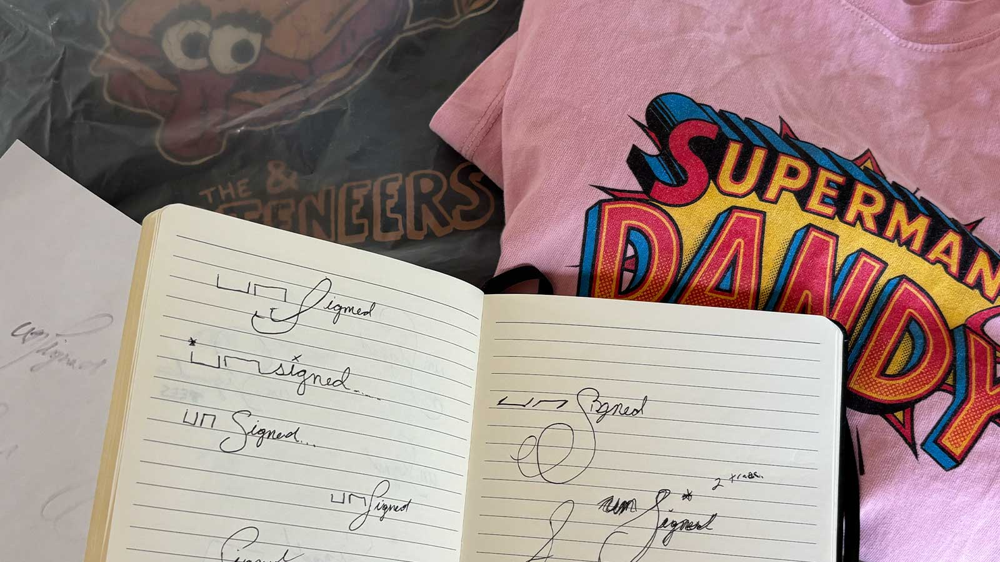

About the Brand
Every band on these shirts never existed. The arts programs we're trying to save are very real.
The Mission
Unsigned Tees exists to keep arts programs alive in Texas schools. Every shirt funds real music education for real kids — the future bands who haven't had their stage yet. We're building toward a formal giving partnership and will be transparent about that as it develops. In the meantime, buying a shirt is a vote for the idea.

FAQ
- What is Unsigned Tees?
- A collection of vintage-style graphic tees for bands that never existed. Every design is original — created from scratch, not pulled from any real artist's catalog.
- Are these real bands?
- No. Every band, every logo, every name is completely made up. That's the point.
- Will anyone else have the same shirt?
- Unlikely. You're not going to walk into a Target and see this on a rack, or spot it on three other people at a show. The shirt feels like it has a history — you just get to decide what that history is.
- Can I use these in my Superbowl spot??
- Yes, without any paperwork. Because every design is an original human creation, there's no band to license, no label to call, no release form to sign. They're camera-ready out of the box. Wardrobe stylists, this one's for you.
- Did you use AI to make these?
- We use AI as a production tool to bring original concepts to life — the same way a designer might use Photoshop. The ideas, the names, the creative direction are all original human work. Nothing here samples or derives from a real artist or existing IP.
- Why fictional bands?
- Because real band tees are everywhere, and they come pre-loaded with meaning you didn't choose. A fictional band tee is a blank canvas that looks like a relic. It's got the feel without the baggage — and nobody owns it but you.
- What are the shirts actually like?
- Heavy. Soft. The kind of shirt you actually want to wear. We print on 100% cotton heavyweight blanks — thicker than what you'd find at a fast fashion retailer, with detailed ink that holds up. They come out of the bag already feeling broken in, not stiff. The weight is part of the point.
- Do you accept returns?
- Each shirt is printed to order, so we don't accept returns or exchanges. If something arrives damaged or there's an issue with your order, reach out and we'll make it right.
- How do I get in touch?
- Find us on Instagram at @unsignedtees — DMs are open. That's the best way to reach us for questions, wholesale, or styling inquiries.